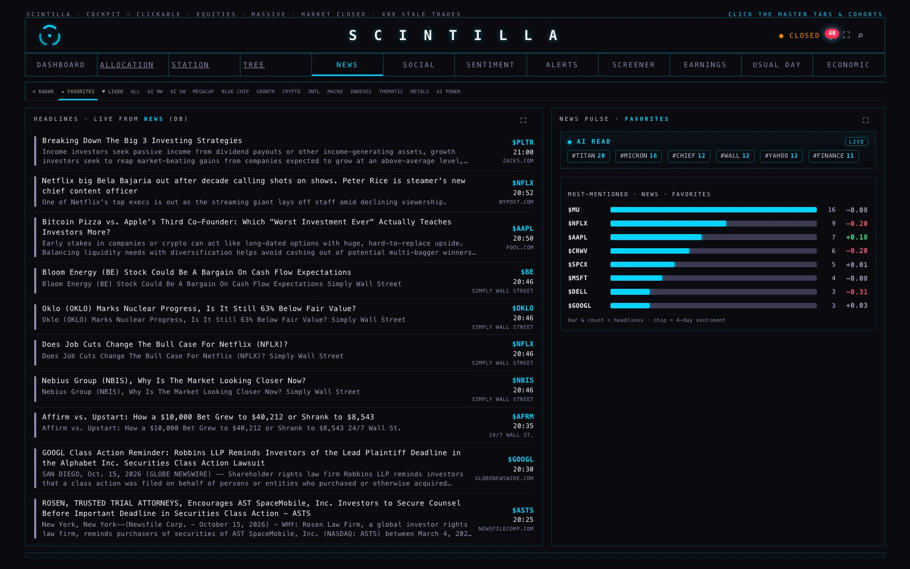
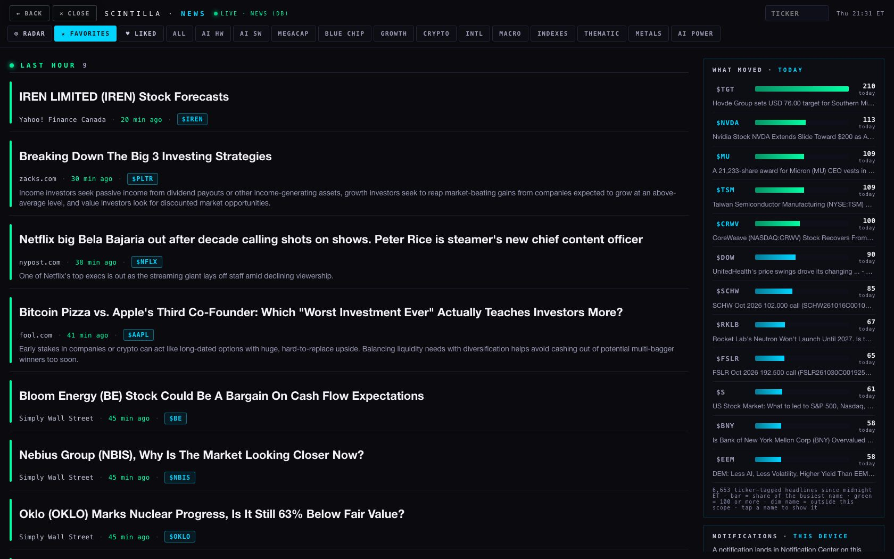
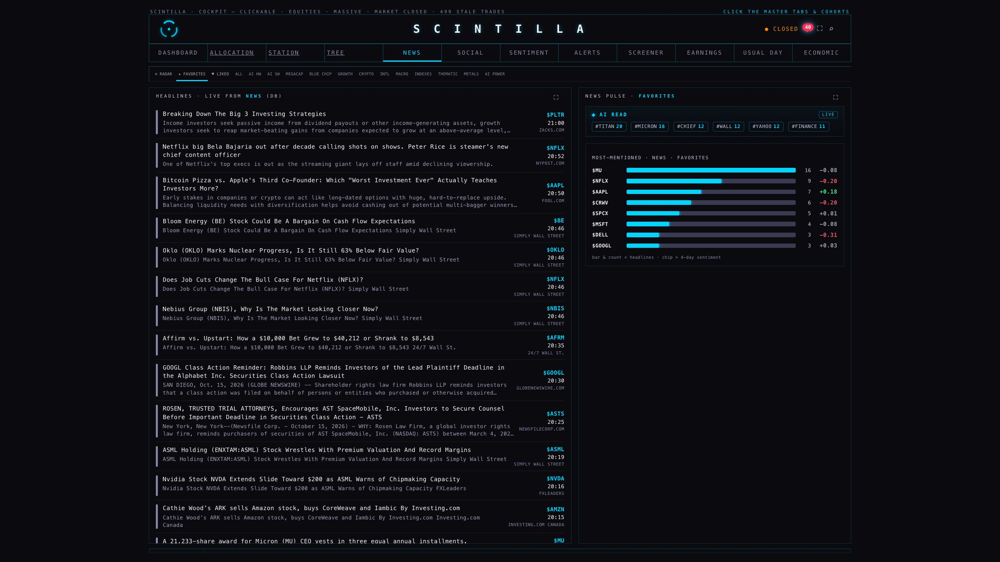
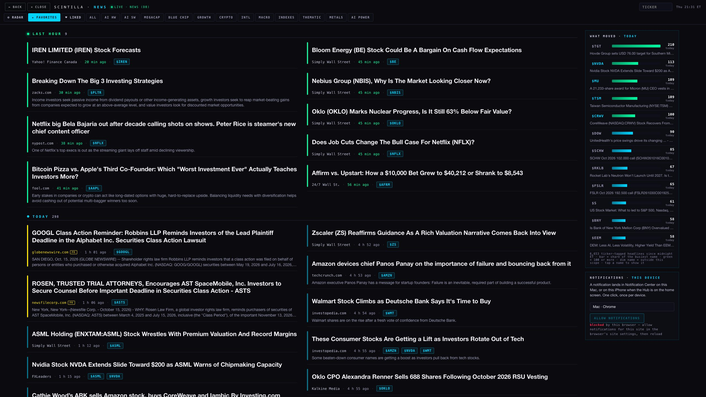
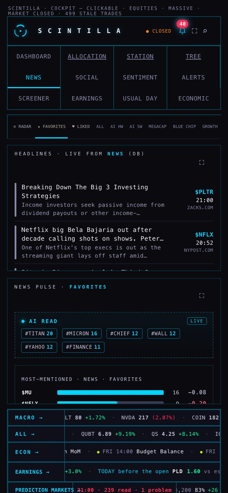
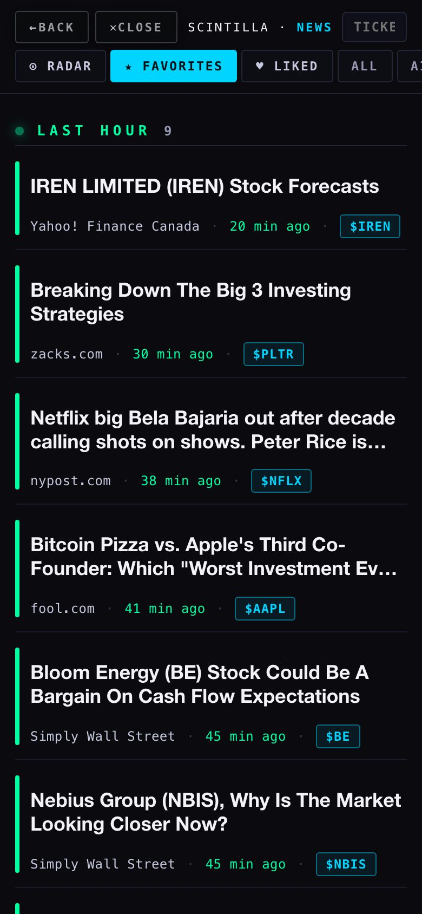

hub/n2-news-and-push-20261015 from 7b66061 · the live Hub is unchanged, nothing deployed to it · the trial page is /preview/news/ on this branchAlan, 15 Oct: "this news section also looks so bland. And the fonts are kind of small. I can't really see shit. The titles need to be way bigger." The live room draws a headline at 10.5 css px (13.4 px as drawn at 1680, because the page zooms itself 1.28×; 15.2 px at 2560; 10.5 px on the phone) with its source at 7.5 px. The trial draws the title at 22 px on the desktop and 18 px on the phone, two lines at most, and the line under it — source · age · the tickers as chips — at 12.5 px.






Every picture is headless (HC1's rig): one browser at a time, service workers blocked, every request that is not a GET stopped before it leaves and counted (0 left). "after" serves this worktree's files at https://scintillahub.ai/ in the browser only; the database reads are live. The measurements are in data/measure.json; tools/capture.mjs remakes all of it.
/#co=NVDA, a 7-line addition to index.html on this branch (the Hub had no way to open a company by address).published_ts and capped on its own, so a results day (TGT: 210 headlines today) cannot push yesterday off the end.?scope= and #TICKER address it.push_subscriptions.| route | cost | what reaches the device | what a third party sees | failure modes | state today |
|---|---|---|---|---|---|
| (a) Web Push from the Hub service worker + VAPID + edge function notify-push | free | macOS Notification Center via Brave/Chrome (the web-app window need not be open; the browser must be running); iPhone/iPad lock screen and Notification Center when the Hub is on the Home Screen (iOS 16.4+) | Google's / Apple's push service carries an encrypted payload it cannot read (RFC 8291); it sees that a message went to that device, when, and its size. ntfy sees nothing; nobody else is involved. | · Brave on the Mac ships with "Use Google services for push messaging" OFF (brave://settings/privacy) — with it off, Allow fails with "push service error". One toggle, once. · iPhone: only from the Home-Screen app; Safari in a tab cannot subscribe. · Subscriptions expire or rotate; the function prunes 404/410 rows, and the page then shows "not yet allowed" again. · The live Hub unregisters every service worker on load (its FIX 7b) — on this branch the /push/ worker is left alone; that change must ship with the page or notifications die the next time the Hub opens.· macOS: Brave itself must be allowed in System Settings › Notifications (it asks the first time). | built and deployed (function answers; keys in secrets); table not applied; delivery unproven here (see below) |
| (b1) ntfy.sh a POST from pg_net | free | the ntfy app (iOS, free; Mac: ntfy's web app or the desktop app) — an ordinary app notification on every device | ntfy.sh keeps every message 12 h in the clear: title, the sentence ("MU: 5 headlines in the last hour", "NVDA reported: EPS…"), click URL, the database's IP, the topic name. Anyone who knows the topic name reads the stream. It is a public relay run by one person in Germany. | · the topic name is the only secret; · the relay's uptime is nobody's promise; · iOS delivery goes through ntfy's own APNs bridge (needs ntfy.sh, not a self-host, unless you also run the bridge). | SQL written, not applied; the relay was proved from here (two messages published to a throwaway topic and read back from the server, 01:10 UTC) |
| (b2) Pushover | US$5 once per platform (iOS, Mac desktop app separately) | the Pushover app | Pushover's servers see the same cleartext as ntfy; an account, a token, a 30-day log | a paid service and an account: needs the coordinator's say; otherwise the most reliable of the three | not built |
Recommendation: (a) Web Push. It is the only route where the words of a notification never leave the estate in the clear, it needs no app and no account, it is free, and it is the Hub's own — the same page that shows the headline shows the Allow button. Its one real hurdle is the Brave toggle on the iMac (one click in brave://settings/privacy), and its one real dependency is the FIX 7b change shipping with it. Keep (b1) ntfy as the five-minute fallback for a day when Google's push is misbehaving: the SQL is written, and the comparison above says what it costs in privacy. Pushover only if the coordinator wants a paid, accountable service.
| claim | proof | state |
|---|---|---|
| the encryption is the standard's (RFC 8291 aes128gcm) | tools/webpush-selftest.mjs: the RFC's own Appendix A example — same keys, same salt, same sentence — gives the same 144 bytes, byte for byte; and the receiver-side mirror reads the RFC's ciphertext back. Also in the Hub suite (tests/n2-news-and-push.test.mjs). | proved |
| it agrees with an independent implementation | the web-push npm package (3.6.7) encrypts for a throwaway browser key; our mirror decrypts it. | proved |
| the VAPID header is valid (RFC 8292) | Node's own crypto verifies the ES256 signature with the public key alone; aud = the push service origin; 12 h expiry; header shape vapid t=…, k=…. | proved |
| the function is deployed and guarded | GET ?mode=vapid → the 87-char public key; POST without a bearer → 401; with a wrong bearer → 401; OPTIONS → 200 with CORS for the page. | proved (21:21 ET) |
| the keys are stored, not printed | supabase secrets set --env-file from a 0600 scratch file: VAPID_PUBLIC_KEY, VAPID_PRIVATE_KEY, VAPID_SUBJECT ("count":3). The file is deleted. No key appears in the repository, this page, or the run log. | done |
| a browser subscribes and a push reaches a device | not provable from this rig. Headless Chromium refuses notifications outright (Notification.permission === "denied" after an explicit grant; tried the new headless mode and the headless shell) and so cannot subscribe; and this MacBook runs the rig headless, so even a visible test would have to be the coordinator's. The one-click test below is the proof. | unproven — test below |
| ntfy.sh carries a message end to end to the server | POST to a throwaway topic → the server's JSON receipt (id, time, title, click); read back with /json?poll=1&since=all. The device side needs the app subscribed to the topic. | proved to the server |
| the table and the three events | SQL written with its rollback first; the Hub suite checks the shape. Not applied: applying SQL to the live database is the coordinator's step (this lane's database query was refused by the permission gate, which is preserved). | built, not applied |
supabase db query --linked -f supabase/migrations/20261015_push_subscriptions.sql from the worktree.cd "/Users/alanharvey/SCINTILLA 0.5/_worktrees/n2-news-and-push-20261015" && python3 -m http.server 8787Open
http://localhost:8787/preview/news/ in Chrome, or in Brave after switching on brave://settings/privacy › "Use Google services for push messaging". Name the device in the box and click ALLOW NOTIFICATIONS — Alan's click, on Alan's device; the card then reads "allowed on this device · stored".curl -s -X POST "https://wadinxqplrggagkvrdag.functions.supabase.co/notify-push?mode=test" \
-H "Authorization: Bearer $SUPABASE_SERVICE_ROLE_KEY" -H "content-type: application/json" \
-d '{"title":"SCINTILLA · test","body":"If you can read this, the route works.","url":"/preview/news/"}'
Success looks like {"key":"test|…","declined":null,"sent":1,"failed":0,"pruned":0,"errors":[]} and a banner in Notification Center within a second or two (a tap opens the page). Between 22:00 and 06:30 ET it answers "declined":"quiet window" by design — run select public.push_quiet_now(); to see the clock's view, or test in the morning. "declined":"rate limit" means a push went out in the last minute. "sent":0,"failed":1 with an error naming push service error or 401/403 is the push service refusing the VAPID key or the subscription — paste the errors line back.curl -s -X POST ".../notify-push?mode=events" -H "Authorization: Bearer …" — it answers with the newest pending sentence and whether it was sent. select * from public.push_events_pending(); shows what it would say right now without sending.-- every minute on weekdays, the newest pending sentence, under the one-a-minute rule and the quiet window; the bearer from Vault as the other crons do
select cron.schedule('notify-push-events', '* * * * 1-5', $$
select net.http_post(url := 'https://wadinxqplrggagkvrdag.functions.supabase.co/notify-push?mode=events',
headers := jsonb_build_object('content-type','application/json','Authorization','Bearer ' || (select decrypted_secret from vault.decrypted_secrets where name = 'scintilla_functions_key')),
body := '{}'::jsonb, timeout_milliseconds := 25000);
$$);
-- and the function reads that bearer as SCINTILLA_FUNCTIONS_KEY (supabase secrets set), or the service role key is used instead
-- undo: select cron.unschedule('notify-push-events');
| element | desktop | phone (≤500) | note |
|---|---|---|---|
| title | 22 px / 1.22, weight 600, --ink #F2F2F8, 2 lines (clamp) | 18 px | sans; hover cyan |
| meta line | 12.5 px mono: source (--ink2) · age (ink3; green in LAST HOUR) · chips | 12 px | age ticks every 30 s; hover shows the ET time |
| chip | 22 px tall, 12 px mono bold, cyan on 8% cyan, 45% cyan border; hover inverts | 11.5 px | up to 6 chips, then +n; MARKET chip for untagged rows |
| group header | 13 px mono, .3em tracking, sticky under the chrome; LAST HOUR --bull, TODAY --crk, YESTERDAY --coin, EARLIER --dim; the count beside | same | the article's left edge takes the group's colour; PR rows take --sv3 |
| snippet | 14 px, 2 lines, ink3; dropped when it only repeats the title | hidden | |
| scopes | 11.5 px mono pills; active = cyan fill, dark ink | horizontal scroll | RADAR · FAVORITES · LIKED · ALL · 12 cohorts |
| layout | feed + 340 px sticky rail; two feed columns above 2000 px | one column; rail after the feed | no sideways scroll at any size (measured 0) |
| rail · what moved | name · bar · count/today · newest title; green ≥ 100 | same, no title line | tap = show that name |
| rail · notifications | device name · ALLOW/STOP · state line | same | states: not allowed · allowed (host) · blocked · iPhone not installed · browser cannot |
Reads: news (select ticker,title,snippet,site,feed,url,published_ts; windowed on published_ts; order desc; today ≤300 per chunk of 35 tickers, yesterday ≤120), ticker_cohorts, station_lists (favorites, radar), hub_favorites; what-moved: news?select=ticker,title,published_ts&published_ts=gte.<midnight ET>&ticker=neq._MARKET paged by 1,000 (≤10 pages). Refresh: 60 s feed, 5 min rail. Same dedupe rule as the Hub (first 64 normalised chars; 48-char common prefix).
push-sw.js (root) — push → showNotification(title, body, tag = the event key so a repeat replaces, icon /icon-192.png, data.url); notificationclick → focus an open Hub window and navigate it, else open one. No fetch handler, no caches. Registered by the page with scope: "/push/".index.html (branch) — FIX 7b's clearing block skips a registration whose scope ends in /push/; /#co=TICKER opens the company on boot and on hashchange. The trial copy at /preview/company-view/ was rebuilt by build-trial.py, as the house rule says.supabase/functions/notify-push/index.ts + webpush.mjs — GET ?mode=vapid; POST {title, body, url, key, kind}; ?mode=events; ?mode=test. Each send: fresh ephemeral P-256 pair, 16-byte salt, aes128gcm, TTL 3600, urgency high, topic = kind. 404/410 prune the row; other failures are recorded on it. Every call writes a push_log row (sent / failed / declined with reason).supabase/migrations/20261015_push_subscriptions.sql — push_subscriptions (RLS: anon INSERT with shape checks, anon DELETE by endpoint, no anon SELECT), push_log (service role only; unique sent key), push_quiet_now(), push_can_send_now(), news_usual_per_hour(t) = 14-day count / 336, news_bursts_now() (≥3 in the hour and ≥ 3 × max(usual, 1)), push_events_pending() — the three sentences, de-duplicated against push_log, newest first. Rollback: …_ROLLBACK.sql.supabase/migrations/20261015_push_ntfy_OPTIONAL.sql — route (b1) as a function over pg_net with the topic in Vault; the cron line to wire it, commented out.Baseline on the untouched tip 7b66061 (node --test tests/*.test.mjs): 2,186 tests, 2,175 passing, 3 skipped, 8 failing names — Indicator Lab checkpoint, MONTH, REGIME, the age function, readiness, saved review charts, xfeed-publish and its end-to-end run. This branch, all tests: 2,193 tests, 2,180 passing, 10 failing: the baseline's 8 plus (a) "direct entry: one hashchange listener" — the first cut of the /#co= block added a second listener; it now opens a company on arrival only, and the file passes (economic-entry, hub-nav, the N2 file and the trial test together: 27 of 27); (b) "the Clock: rewind, play to the end, and the 45-second return to live" — timing-based, fails beside headless browsers and passes alone (6 of 6, visual-engine untouched). No baseline failure was fixed; no other name is new.
supabase db query) and that refusal is preserved — table shapes were read through the Hub's own anon REST path instead, and the migration is left to the coordinator.